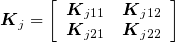

| predict_uvcov {lme4GS} | R Documentation |
Obtain BLUPs for new levels of random effects with user specified variance covariance-matrices.
predict_uvcov(object,newrandom)
object |
is an object returned by lmer_uvcov. |
newrandom |
newrandom two level list with ids to be predicted and variance covariance matrix that contains information of these ids and the ids used to fit the model. |
Assume that the random effect uj ~ N(0, σ2jKj) and the matrix Kj is partitioned as follows:
uj=(uj1 uj2)'and

The BLUP for u[j2] can be obtained as:
E(uj2|y1)=Kj21Kj11-1ûj1Paulino Perez-Rodriguez
## Not run:
library(BGLR)
library(lme4GS)
#Example 1, wheat
data(wheat)
X<-wheat.X
Z<-scale(X,center=TRUE,scale=TRUE)
G<-tcrossprod(Z)/ncol(Z)
A<-wheat.A
rownames(G)<-colnames(G)<-rownames(A)
y<-wheat.Y[,1]
#Predict 10/100 of records selected at random.
#The data were partitioned in 10 groups at random
#and we predict individuals in group 2.
fold<-2
y_trn<-y[wheat.sets!=fold]
y_tst<-y[wheat.sets==fold]
#######################################################################################
#Marker based prediction
#######################################################################################
random<-list(mrk=list(K=G,id=names(y_trn)))
out<-lmer_uvcov(y_trn,fixed="1",random=random)
plot(y_trn,predict(out),xlab="Phenotype",ylab="Pred. Gen. Value")
#Random effect list for prediction
newrandom<-list(mrk=list(K=G,id=names(y)[wheat.sets==fold]))
blup_tst<-predict_uvcov(out,newrandom)
blup_tst<-blup_tst$mrk
yHat_tst<-fixef(out)[1]+blup_tst
points(y_tst,blup_tst,col="red",pch=19)
#Correlation in testing set
cor(y_tst,yHat_tst)
#######################################################################################
#Pedigree based prediction
#######################################################################################
random<-list(ped=list(K=A,id=names(y_trn)))
out<-lmer_uvcov(y_trn,fixed="1",random=random)
plot(y_trn,predict(out),xlab="Phenotype",ylab="Pred. Gen. Value")
#Random effect list for prediction
newrandom<-list(ped=list(K=A,id=names(y)[wheat.sets==fold]))
blup_tst<-predict_uvcov(out,newrandom)
blup_tst<-blup_tst$ped
yHat_tst<-fixef(out)[1]+blup_tst
points(y_tst,yHat_tst,col="red",pch=19)
#Correlation in testing set
cor(y_tst,yHat_tst)
#######################################################################################
#Markers + Pedigree based prediction
#######################################################################################
random<-list(mrk=list(K=G,id=names(y_trn)),
ped=list(K=A,id=names(y_trn)))
out<-lmer_uvcov(y_trn,fixed="1",random=random)
plot(y_trn,predict(out),xlab="Phenotype",ylab="Pred. Gen. Value")
#Random effect list for prediction
newrandom<-list(mrk=list(K=G,id=names(y)[wheat.sets==fold]),
ped=list(K=A,id=names(y)[wheat.sets==fold]))
blup_tst<-predict_uvcov(out,newrandom)
blup_tst<-blup_tst$mrk+blup_tst$ped
yHat_tst<-fixef(out)[1]+blup_tst
points(y_tst,blup_tst,col="red",pch=19)
#Correlation in testing set
cor(y_tst,yHat_tst)
## End(Not run)